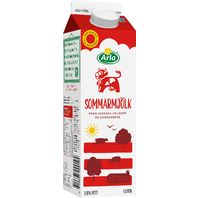
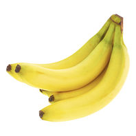
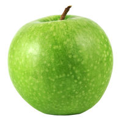
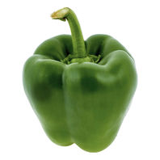
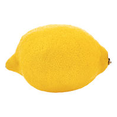
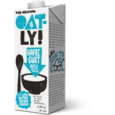
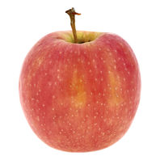
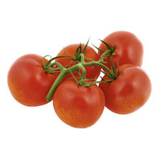
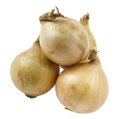

This is a plant-based milk alternative that is a great source of protein and calcium. It is perfect for those who are lactose intolerant or vegan.

Arla Standard Milk
Arla Standard Milk is a high-quality dairy product that provides essential nutrients like calcium and vitamin D. It is perfect for your daily consumption.

Banana
Bananas are a popular fruit that are rich in potassium and fiber. They are perfect for a quick snack or as an addition to your breakfast.
Vada Pav
Vada Pav is a popular Indian street food consisting of a spicy potato filling sandwiched between a bread bun. It is a delicious and satisfying snack.

Apple (Granny Smith)
Granny Smith apples are known for their tart flavor and crisp texture. They are perfect for baking, cooking, or enjoying as a fresh snack.

Green Bell Pepper
Green bell peppers are a versatile vegetable that can be used in a variety of dishes. They are rich in vitamins A and C, and add a fresh, crisp flavor to your meals.

Lemon
Lemons are a citrus fruit known for their bright yellow color and tangy flavor. They are commonly used in cooking, baking, and beverages to add a refreshing zest.

Oatly Natural Oatghurt
Oatly Natural Oatghurt is a dairy-free yogurt alternative made from oats. It is creamy, delicious, and perfect for those who are lactose intolerant or vegan.

Apple (Pink Lady)
Pink Lady apples are known for their sweet-tart flavor and crisp texture. They are perfect for snacking, baking, and adding to salads.

Vine Tomato
Vine tomatoes are juicy and flavorful, perfect for salads, sandwiches, and cooking. They are rich in vitamins A and C, and add a fresh taste to any dish.

Vine Tomato
Yellow onions are a staple in many kitchens, known for their strong flavor and versatility. They are perfect for adding depth to a variety of dishes.